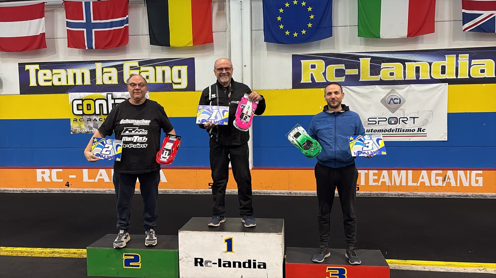

Italian Indoor Series 26/27 · 2ª prova
I report di Scandiano
Quattro categorie, una domenica a RcLandia. Qui trovi il racconto di ogni categoria, man mano che esce.
- 1/12In arrivoIl report sarà pubblicato a breve

1/12 LMHRampini contro MontecchiVince Alberto Montecchi- GTIn arrivoIl report sarà pubblicato a breve
 VaschettaTre in un puntoVince Massimo Imovilli
VaschettaTre in un puntoVince Massimo Imovilli